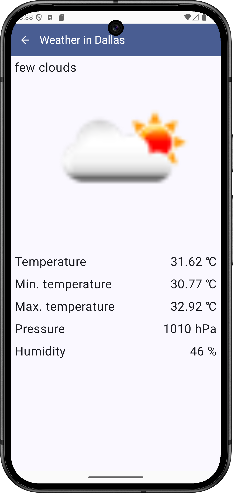
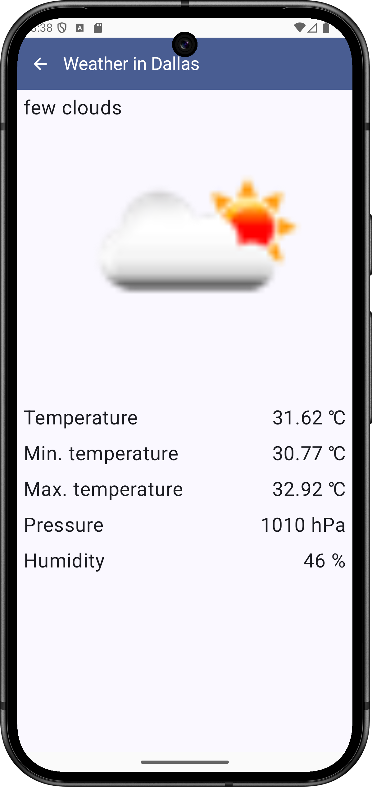
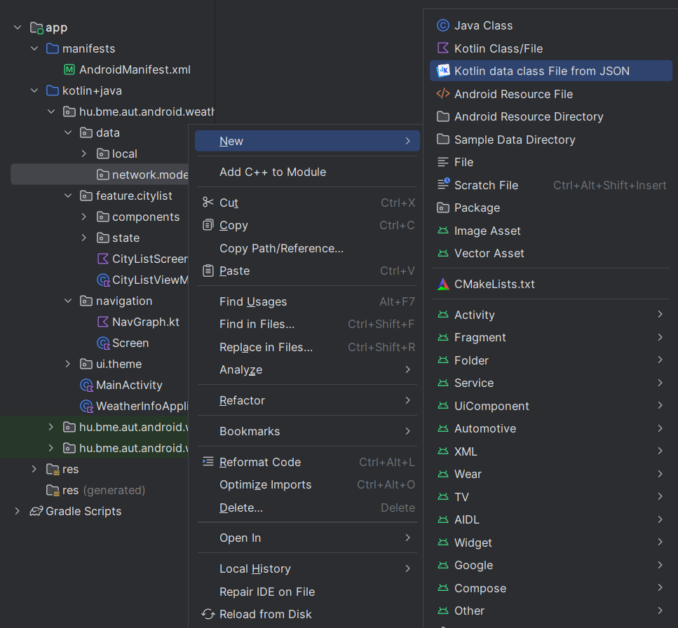

Labor 07 - Retrofit - Időjárás alkalmazás¶
Bevezető¶
A labor során egy időjárás információkat megjelenítő alkalmazás elkészítése a feladat. A korábban látott UI elemek használata mellett láthatunk majd példát hálózati kommunkáció hatékony megvalósítására is a Retrofit könyvtár felhasználásával.
Az alkalmazás városok listáját jeleníti meg egy LazyColumn-ban, a kiválasztott város időjárás adatait pedig az OpenWeatherMap REST API-jának segítségével kérdezi le. Új város hozzáadására egy FloatingActionButton megnyomásával van lehetőség.
REST
Felhasznált technológiák:
Az alkalmazás specifikációja¶
Az alkalmazás egy Activity-ből áll.
Az alkalmazás indulásakor megjelenő CityListScreen a felhasználó által felvett városok listáját jeleníti meg. A városokat balra elhúzva az adott város törlődik a listából. Új várost a nézet jobb alsó sarkában található FloatingActionButton megnyomásával lehet felvenni.
Egy városra való kattintás hatására a NavGraph segítségével egy új Composable képernyőt hozunk előtérbe az adott város időjárás adataival. A rövid jellemzés mellett egy akutális ikon és a városban mért átlagos, minimum és maximum hőmérséklet, a légnyomás és a páratartalom értéke látható.

 

Laborfeladatok¶
A labor során az alábbi feladatokat a laborvezető segítségével, illetve a jelölt feladatokat önállóan kell megvalósítani.
- Város lista megvalósítása: 1 pont
- Időjárás nézet létrehozása és bekötése a navigációba: 2 pont
- Hálózati kommunikáció megvalósítása: 1 pont
- Önálló feladat: város listából törlés megvalósítása: 1 pont
A labor során egy komplex időjárás alkalmazás készül el. A labor szűkös időkerete miatt szükség lesz nagyobb kódblokkok másolására, azonban minden esetben figyeljünk a laborvezető magyarázatára, hogy a kódrészek érthetőek legyenek. A cél a bemutatott kódok megértése és a felhasznált libraryk használatának elsajátítása.
Elnézést kérünk az eddigieknél nagyobb kód blokkokért, de egy ilyen, bemutató jellegű feladat kisebb méretben nem oldható meg, illetve a labor elveszítené a lényegét, ha csak egy „hello world” hálózati kommunikációs lekérést valósítanánk meg. Köszönjük a megértést.
Előkészületek¶
A feladatok megoldása során ne felejtsd el követni a feladat beadás folyamatát.
Git repository létrehozása és letöltése¶
-
Moodle-ben keresd meg a laborhoz tartozó meghívó URL-jét és annak segítségével hozd létre a saját repository-dat.
-
Várd meg, míg elkészül a repository, majd checkout-old ki.
Egyetemi laborokban, ha a checkout során nem kér a rendszer felhasználónevet és jelszót, és nem sikerül a checkout, akkor valószínűleg a gépen korábban megjegyzett felhasználónévvel próbálkozott a rendszer. Először töröld ki a mentett belépési adatokat (lásd itt), és próbáld újra.
-
Hozz létre egy új ágat
megoldasnéven, és ezen az ágon dolgozz. -
A
neptun.txtfájlba írd bele a Neptun kódodat. A fájlban semmi más ne szerepeljen, csak egyetlen sorban a Neptun kód 6 karaktere.
Projekt létrehozása¶
Első lépésként indítsuk el az Android Studio-t, majd:
1. Hozzunk létre egy új projektet, válasszuk az Empty Activity lehetőséget.
2. A projekt neve legyen WeatherInfo, a kezdő package pedig hu.bme.aut.android.weatherinfo
3. Nyelvnek válasszuk a Kotlin-t.
4. A minimum API szint legyen API24: Android 7.0.
5. A Build configuration language Kotlin DSL legyen.
FILE PATH
A projekt a repository-ban lévő WeatherInfo könyvtárba kerüljön, és beadásnál legyen is felpusholva! A kód nélkül nem tudunk maximális pontot adni a laborra!
Függőségek felvétele¶
Vegyük fel a szükséges könyvtárakat a libs.versions.toml fájlban:
[versions]
coilCompose = "2.6.0"
moshi = "1.15.1"
retrofit = "2.11.0"
navigationCompose = "2.8.2"
[libraries]
androidx-navigation-compose = { group = "androidx.navigation", name="navigation-compose", version.ref = "navigationCompose" }
coil-compose = { group = "io.coil-kt", name="coil-compose", version.ref = "coilCompose" }
squareup-moshi = { group = "com.squareup.moshi", name = "moshi-kotlin", version.ref = "moshi" }
converter-moshi = { group = "com.squareup.retrofit2", name = "converter-moshi", version.ref = "retrofit" }
retrofit = { group = "com.squareup.retrofit2", name = "retrofit", version.ref = "retrofit" }
Majd az app modulhoz tartozó build.gradle fájlban a dependencies blokkhoz adjuk hozzá az alábbiakat:
dependencies{
implementation(libs.androidx.navigation.compose)
implementation(libs.retrofit)
implementation(libs.squareup.moshi)
implementation(libs.converter.moshi)
implementation(libs.coil.compose)
}
Ezután kattintsunk a jobb felső sarokban megjelenő Sync now gombra.
Retrofit
A Retrofit a fejlesztő által leírt egyszerű, megfelelően annotált interfészek alapján kódgenerálással állít elő HTTP hivásokat lebonyolító implementációt. Kezeli az URL-ben inline módon adott paramétereket, az URL queryket, stb. Támogatja a legnépszerűbb szerializáló/deszerializáló megoldásokat is (pl.: Gson, Moshi, Simple XML, stb.), amikkel Java/Kotlin objektumok, és JSON vagy XML formátumú adatok közötti kétirányú átalakítás valósítható meg. A laboron ezek közül a Moshi-t fogjuk használni a JSON-ban érkező időjárás adatok konvertálására.
Coil
A Coil egy hatékony képbetöltést és cache-elést megvalósító library Androidra. Egyszerű interface-e és hatékonysága miatt használjuk.
Engedélyek felvétele¶
Az alkalmazásban szükségünk lesz internet elérésre. Vegyük fel az AndroidManifest.xml állományban az Internet permission-t az application tagen kívülre:
<uses-permission android:name="android.permission.INTERNET" />
Engedélyek
Androidon API 23-tól (6.0, Marshmallow) az engedélyek két csoportba lettek osztva. A normal csoportba tartozó engedélyeket elég felvenni az AndroidManifest.xml fájlba az előbb látott módon és az alkalmazás automatikusan megkapja őket. A dangerous csoportba tartozó engedélyek esetén ez már nem elég, futás időben explicit módon el kell kérni őket a felhasználótól, aki akármikor meg is tagadhatja az alkalmazástól a kért engedélyt. Az engedélyek kezeléséről bővebben a developer.android.com oldalon lehet tájékozódni.
Erőforrások hozzáadása¶
Töltsük le az alkalmazásban használt képeket tartalmazó tömörített fájlt, majd helyezzük el a tartalmát a projektünk res mappájába.
Vegyük fel az alábbi szöveges erőforrásokat a res/values/strings.xml-be:
<resources>
<string name="app_name">WeatherInfo</string>
<string name="new_city">New city</string>
<string name="ok">OK</string>
<string name="cancel">Cancel</string>
<string name="weather_in">Weather in %1$s</string>
<string name="some_error_message">Something went wrong.</string>
<string name="label_temperature">Temperature</string>
<string name="label_min_temperature">Min. temperature</string>
<string name="label_max_temperature">Max. temperature</string>
<string name="label_pressure">Pressure</string>
<string name="label_humidity">Humidity</string>
<string name="new_city_hint">City</string>
</resources>
OpenWeatherMap API kulcs¶
Regisztráljunk saját felhasználót az OpenWeatherMap oldalon, és hozzunk létre egy API kulcsot, aminek a segítségével használhatjuk majd a szolgáltatást az alkalmazásunkban!
- Kattintsunk a Sign in majd a Create an account gombra.
- Töltsük ki a regisztrációs formot
- A Company mező értéke legyen "BME", a Purpose értéke legyen "Education/Science"
- Sikeres regisztráció után az API keys tabon található az alapértelmezettként létrehozott API kulcs.
A kapott API kulcsra később szükségünk lesz az időjárás adatokat lekérő API hívásnál.
Városlista megvalósítása (1 pont)¶
Valósítsuk meg az egy LazyColumn-ból álló, városok listáját megjelenítő CityListScreen-t!
A város nevére kattintva jelenik majd meg az időjárás nézet (WeatherScreen), ahol az időjárás információk letöltése fog történni. Új város felvételére egy FloatingActionButton fog szolgálni.
Az architektúra kialakítása¶
Az adatok forrása az előző laboron látottakhoz hasonlóan egy repository lesz. Innen fogjuk visszakapni a (jelenleg csak a memóriában tárolt) várokainkat.
A modell osztály¶
Vegyünk fel a fő package-ünkbe egy data, majd ezen belül egy local, majd ezen belül egy model package-et. Ide fog kerülni a városainkat reprezentáló osztály, ami jelen esetben csupán egy id-val és egy névvel rendelkezik.
City.kt:
package hu.bme.aut.android.weatherinfo.data.local.model
class City(
var id: Int,
var name: String
)
A repository¶
Ez után már elkészíthetjük a repository-jainkat a már látott módon a hu.bme.aut.android.weatherinfo.data.local.repository package-ben.
ICityRepository.kt:
package hu.bme.aut.android.weatherinfo.data.local.repository
import hu.bme.aut.android.weatherinfo.data.local.model.City
import kotlinx.coroutines.flow.Flow
interface ICityRepository {
fun getAllCities(): Flow<List<City>>
suspend fun addCityByName(cityName: String)
}
MemoryCityRepository.kt:
package hu.bme.aut.android.weatherinfo.data.local.repository
import androidx.compose.runtime.mutableStateListOf
import hu.bme.aut.android.weatherinfo.data.local.model.City
import kotlinx.coroutines.flow.Flow
import kotlinx.coroutines.flow.flow
class MemoryCityRepository : ICityRepository {
private var nextId=3
private var cities = mutableStateListOf(
City(id = 0, "Budapest"),
City(id = 1, "London"),
City(id = 2, "Berlin")
)
override fun getAllCities(): Flow<List<City>> = flow {
emit(cities)
}
override suspend fun addCityByName(cityName: String) {
cities.add(City(id = nextId++, name = cityName))
}
}
A repository elkészítése után példányosítsuk is azt az application osztályunkban a hu.bme.aut.android.weatherinfo package-ben.
WeatherInfo.kt:
package hu.bme.aut.android.weatherinfo
import android.app.Application
import hu.bme.aut.android.weatherinfo.data.local.repository.ICityRepository
import hu.bme.aut.android.weatherinfo.data.local.repository.MemoryCityRepository
class WeatherInfoApplication : Application() {
companion object {
lateinit var cityRepository: ICityRepository
}
override fun onCreate() {
super.onCreate()
cityRepository = MemoryCityRepository()
}
}
Majd pedig az AndroidManifest.xml-ben állítsuk be az application osztályunk használatát.
AndroidManifest.xml:
...
<application
android:name=".WeatherInfoApplication"
...
A ViewModel¶
Miután a repository-val megvagyunk, folytathatjuk a következő réteggel, a viewmodel-lel. A városlistához tartozó viewmodel-t és screen-t a hu.bme.aut.android.weatherinfo.feature.citylist package-ben fogjuk elkészíteni. Hozzunk tehát létre itt egy új package-et az állapotnak state néven, majd helyezzük is el benne a CityListState-et.
CityListState.kt:
package hu.bme.aut.android.weatherinfo.feature.citylist.state
import hu.bme.aut.android.weatherinfo.data.local.model.City
sealed class CityListState {
data object Loading : CityListState()
data class Error(val error: Throwable) : CityListState()
data class Result(val cityList: List<City>) : CityListState()
}
Ezek után a citylist package-be jöhet a viewmodel:
CityListViewModel.kt:
package hu.bme.aut.android.weatherinfo.feature.citylist
import androidx.lifecycle.ViewModel
import androidx.lifecycle.ViewModelProvider
import androidx.lifecycle.viewModelScope
import androidx.lifecycle.viewmodel.initializer
import androidx.lifecycle.viewmodel.viewModelFactory
import hu.bme.aut.android.weatherinfo.WeatherInfoApplication
import hu.bme.aut.android.weatherinfo.data.local.model.City
import hu.bme.aut.android.weatherinfo.data.local.repository.ICityRepository
import hu.bme.aut.android.weatherinfo.feature.citylist.state.CityListState
import kotlinx.coroutines.flow.MutableStateFlow
import kotlinx.coroutines.flow.asStateFlow
import kotlinx.coroutines.flow.collectLatest
import kotlinx.coroutines.launch
class CityListViewModel(
private val cityRepository: ICityRepository
) : ViewModel() {
private val _state = MutableStateFlow<CityListState>(CityListState.Loading)
val state = _state.asStateFlow()
init {
getAllCities()
}
private fun getAllCities() {
viewModelScope.launch {
_state.value = CityListState.Loading
try {
cityRepository.getAllCities().collectLatest{
_state.tryEmit(CityListState.Result(it))
}
} catch (e: Exception) {
_state.value = CityListState.Error(e)
}
}
}
fun addCity(city: String) {
viewModelScope.launch {
try {
cityRepository.addCityByName(city)
} catch (e: Exception) {
e.printStackTrace()
}
}
}
companion object {
val Factory: ViewModelProvider.Factory = viewModelFactory {
initializer {
CityListViewModel(
cityRepository = WeatherInfoApplication.cityRepository
)
}
}
}
}
A városlista képernyő megvalósítása¶
Immáron a város adataink készen állnak arra, hogy megjelenítsük azokat a felületen. A CityListScreen elkészítése előtt azonban először az azt alkotó komponenseket készítsük el.
A komponensek elkészítése¶
A városainkat egy kártyán fogjuk megjeleníteni, aminek van egy ikonja, ami egyelőre csak egy placeholder, egy felirata, valamint egy SwipeToDismissBox segítségével megvalósítja azt, hogy ha balra húzzuk, akkor törlődik. Készítsük el ezt a komponenst a hu.bme.aut.android.weatherinfo.feature.citylist.components package-ben.
CityCard.kt:
package hu.bme.aut.android.weatherinfo.feature.citylist.components
import androidx.compose.foundation.background
import androidx.compose.foundation.clickable
import androidx.compose.foundation.layout.Arrangement
import androidx.compose.foundation.layout.Row
import androidx.compose.foundation.layout.fillMaxSize
import androidx.compose.foundation.layout.fillMaxWidth
import androidx.compose.foundation.layout.padding
import androidx.compose.foundation.layout.size
import androidx.compose.foundation.shape.RoundedCornerShape
import androidx.compose.material.icons.Icons
import androidx.compose.material.icons.filled.Delete
import androidx.compose.material3.ExperimentalMaterial3Api
import androidx.compose.material3.Icon
import androidx.compose.material3.ListItem
import androidx.compose.material3.ListItemDefaults
import androidx.compose.material3.MaterialTheme
import androidx.compose.material3.OutlinedCard
import androidx.compose.material3.SwipeToDismissBox
import androidx.compose.material3.SwipeToDismissBoxValue
import androidx.compose.material3.Text
import androidx.compose.material3.rememberSwipeToDismissBoxState
import androidx.compose.runtime.Composable
import androidx.compose.ui.Alignment
import androidx.compose.ui.Modifier
import androidx.compose.ui.graphics.Color
import androidx.compose.ui.res.painterResource
import androidx.compose.ui.tooling.preview.Preview
import androidx.compose.ui.unit.dp
import androidx.compose.ui.unit.sp
import hu.bme.aut.android.weatherinfo.R
@OptIn(ExperimentalMaterial3Api::class)
@Composable
fun CityCard(
city: String,
onCityClick: (String) -> Unit,
onDelete: (String) -> Unit
) {
val dismissState = rememberSwipeToDismissBoxState(confirmValueChange = {
if (it == SwipeToDismissBoxValue.EndToStart) {
onDelete(city)
}
return@rememberSwipeToDismissBoxState true
},
// positional threshold of 25%
positionalThreshold = { it * .25f }
)
OutlinedCard(
modifier = Modifier
.fillMaxWidth(),
shape = RoundedCornerShape(16.dp)
) {
SwipeToDismissBox(
enableDismissFromStartToEnd = false,
state = dismissState,
backgroundContent = {
Row(
modifier = Modifier
.fillMaxSize()
.background(
when (dismissState.dismissDirection) {
SwipeToDismissBoxValue.EndToStart -> Color.Red
else -> MaterialTheme.colorScheme.background
}
)
.padding(12.dp, 8.dp),
verticalAlignment = Alignment.CenterVertically,
horizontalArrangement = Arrangement.End
) {
Icon(
imageVector = Icons.Default.Delete,
contentDescription = "Delete"
)
}
}
) {
ListItem(
colors = ListItemDefaults.colors(containerColor = MaterialTheme.colorScheme.primaryContainer),
headlineContent = {
Text(
text = city,
fontSize = 24.sp
)
},
leadingContent = {
Icon(
modifier = Modifier
.size(64.dp),
painter = painterResource(id = R.drawable.ic_placeholder),
contentDescription = ""
)
},
modifier = Modifier.clickable(onClick = {
onCityClick(
city
)
}
)
)
}
}
}
@Composable
@Preview
fun CityCardPreview() {
CityCard(city = "Budapest", onCityClick = {}, onDelete = {})
}
A megjelenítéshez most nem készítettünk saját komplex elrendezést, inkább a beépített ListItem composable-t használjuk. A nekünk kellő funkcionalitást, hogy kiírunk egy szöveget, és felhelyezünk egy képet, könnyen megtehetjük a headlineContent és a leadingContent property-kkel.
Figyeljük meg, hogy a SwipeToDismissBox-nál hogyan tiltjuk le a balra húzást, és hogyan állítjuk be az állapotát!
A város lista kiírása után már csak annyi dolgunk van, hogy lehetővé tegyük új város felvételét is. Ezt egy egyszerű általános dialógussal fogjuk megtenni, amibe a felhasználó egy szöveget írhat be.
StringInputDialog.kt:
package hu.bme.aut.android.weatherinfo.feature.citylist.components
import androidx.compose.foundation.background
import androidx.compose.foundation.layout.Arrangement
import androidx.compose.foundation.layout.Column
import androidx.compose.foundation.layout.Row
import androidx.compose.foundation.layout.Spacer
import androidx.compose.foundation.layout.fillMaxWidth
import androidx.compose.foundation.layout.height
import androidx.compose.foundation.layout.padding
import androidx.compose.foundation.shape.RoundedCornerShape
import androidx.compose.foundation.text.KeyboardOptions
import androidx.compose.material3.Button
import androidx.compose.material3.Card
import androidx.compose.material3.MaterialTheme
import androidx.compose.material3.OutlinedButton
import androidx.compose.material3.OutlinedTextField
import androidx.compose.material3.Text
import androidx.compose.runtime.Composable
import androidx.compose.runtime.getValue
import androidx.compose.runtime.mutableStateOf
import androidx.compose.runtime.remember
import androidx.compose.runtime.setValue
import androidx.compose.ui.Alignment
import androidx.compose.ui.Modifier
import androidx.compose.ui.res.stringResource
import androidx.compose.ui.text.font.FontWeight
import androidx.compose.ui.text.input.ImeAction
import androidx.compose.ui.tooling.preview.Preview
import androidx.compose.ui.unit.dp
import androidx.compose.ui.unit.sp
import androidx.compose.ui.window.Dialog
import hu.bme.aut.android.weatherinfo.R
@Composable
fun StringInputDialog(
modifier: Modifier = Modifier,
title: String,
label: String,
onDismiss: () -> Unit,
onConfirm: (String) -> Unit
) {
Dialog(onDismissRequest = onDismiss) {
Card(shape = RoundedCornerShape(16.dp)) {
Column(
modifier = modifier
.fillMaxWidth()
.background(MaterialTheme.colorScheme.background)
.padding(16.dp),
horizontalAlignment = Alignment.CenterHorizontally,
verticalArrangement = Arrangement.Center
) {
Text(
text = title,
fontWeight = FontWeight.Bold,
fontSize = 24.sp
)
Spacer(modifier = Modifier.height(16.dp))
var input by remember { mutableStateOf("") }
var isInputError by remember { mutableStateOf(input.isEmpty()) }
OutlinedTextField(
shape = RoundedCornerShape(8.dp),
value = input,
onValueChange = {
input = it
isInputError = it.isEmpty()
},
maxLines = 1,
isError = isInputError,
keyboardOptions = KeyboardOptions(imeAction = ImeAction.Done),
label = { Text(text = label) }
)
Spacer(modifier = Modifier.height(16.dp))
Row(
modifier = Modifier.fillMaxWidth(),
horizontalArrangement = Arrangement.SpaceEvenly
) {
OutlinedButton(
onClick = onDismiss,
shape = RoundedCornerShape(8.dp),
modifier = modifier
.weight(1f)
.padding(8.dp)
) {
Text(stringResource(id = R.string.cancel))
}
Button(
onClick = {
if (!isInputError) {
onConfirm(input)
onDismiss()
}
},
shape = RoundedCornerShape(8.dp),
modifier = modifier
.weight(1f)
.padding(8.dp)
) {
Text(stringResource(id = R.string.ok))
}
}
}
}
}
}
@Composable
@Preview
fun StringInputDialogPreview() {
StringInputDialog(
title = "New City",
label = "City name",
onDismiss = {},
onConfirm = {}
)
}
Ennek a függvénynek két lambda paramétere lesz, onDismiss ez fog felelni azért hogy a dialógus ablakunkat el tudjuk tüntetni, illetve az onConfirm, ami pedig az új város hozzáadását teszi lehetővé. Ezeket a lambda paramétereket továbbadjuk paraméterként a többi függvénynek a következő képpen.
onDismiss- Ezt a paramétert mind a két gomb meg kell hogy kapja, ugyanis ha hozzáadtunk egy új várost azt szeretnénk hogy eltűnjön az ablak, illetve ha meggondolnánk magunkat és nem szeretnénk új várost felvenni akkor is el kell tüntetni az ablakot.onConfirm- Ezt csak a pozitív gombra fogjuk rátenni, egy string paraméterrel, ami pedig a beviteli mező szerint lesz változtatható.
A CityListScreen elkészítése¶
Miután elkészültönk a viewmodel-lel és a komponensekkel is, nincs más hátra, minthogy összerakjuk a CityListScreen-t a hu.bme.aut.android.weatherinfo.feature.citylist package-ben.
CityListScreen.kt:
package hu.bme.aut.android.weatherinfo.feature.citylist
import androidx.compose.foundation.layout.Spacer
import androidx.compose.foundation.layout.height
import androidx.compose.foundation.layout.padding
import androidx.compose.foundation.lazy.LazyColumn
import androidx.compose.foundation.lazy.items
import androidx.compose.material.icons.Icons
import androidx.compose.material.icons.filled.Add
import androidx.compose.material3.CircularProgressIndicator
import androidx.compose.material3.ExperimentalMaterial3Api
import androidx.compose.material3.Icon
import androidx.compose.material3.LargeFloatingActionButton
import androidx.compose.material3.MaterialTheme
import androidx.compose.material3.Scaffold
import androidx.compose.material3.Text
import androidx.compose.material3.TopAppBar
import androidx.compose.material3.TopAppBarDefaults
import androidx.compose.runtime.Composable
import androidx.compose.runtime.getValue
import androidx.compose.runtime.mutableStateOf
import androidx.compose.runtime.remember
import androidx.compose.runtime.setValue
import androidx.compose.ui.Modifier
import androidx.compose.ui.res.stringResource
import androidx.compose.ui.tooling.preview.Preview
import androidx.compose.ui.unit.dp
import androidx.lifecycle.compose.collectAsStateWithLifecycle
import androidx.lifecycle.viewmodel.compose.viewModel
import hu.bme.aut.android.weatherinfo.R
import hu.bme.aut.android.weatherinfo.feature.citylist.components.CityCard
import hu.bme.aut.android.weatherinfo.feature.citylist.components.StringInputDialog
import hu.bme.aut.android.weatherinfo.feature.citylist.state.CityListState
@OptIn(ExperimentalMaterial3Api::class)
@Composable
fun CityListScreen(
onCityClick: (String) -> Unit,
viewModel: CityListViewModel = viewModel(factory = CityListViewModel.Factory)
) {
val state = viewModel.state.collectAsStateWithLifecycle().value
var isNewCityDialogOpen by remember { mutableStateOf(false) }
Scaffold(
topBar = {
TopAppBar(
title = { Text(text = stringResource(id = R.string.app_name)) },
colors = TopAppBarDefaults.topAppBarColors(
containerColor = MaterialTheme.colorScheme.primary,
titleContentColor = MaterialTheme.colorScheme.onPrimary
)
)
},
floatingActionButton = {
LargeFloatingActionButton(
onClick = {
isNewCityDialogOpen = true
},
containerColor = MaterialTheme.colorScheme.primary
) {
Icon(
imageVector = Icons.Default.Add,
contentDescription = null
)
}
}
) { innerPadding ->
when (state) {
is CityListState.Loading -> CircularProgressIndicator()
is CityListState.Error -> {
Text(text = state.error.toString())
}
is CityListState.Result -> {
LazyColumn(
modifier = Modifier
.padding(innerPadding)
.padding(8.dp)
) {
items(items = state.cityList, key = { item -> item.id }) { city ->
CityCard(
city = city.name,
onCityClick = onCityClick,
onDelete = { /*TODO remove city*/ }
)
if (state.cityList.size - 1 > state.cityList.indexOf(city)) {
Spacer(modifier = Modifier.height(8.dp))
}
}
}
}
}
if (isNewCityDialogOpen) {
StringInputDialog(
onDismiss = { isNewCityDialogOpen = false },
onConfirm = { cityList ->
viewModel.addCity(cityList)
isNewCityDialogOpen = false
},
title = stringResource(id = R.string.new_city),
label = stringResource(id = R.string.new_city_hint)
)
}
}
}
@Composable
@Preview
fun CityListScreenPreview() {
CityListScreen(onCityClick = {})
}
A navigáció elkészítése¶
A szokásoknak megfelelően, a navigációhoz NavGraph-ot fogunk használni. Készítsük tehát el a hu.bme.aut.android.weatherinfo.navigation package-ben a szükséges osztályokat.
Screen.kt:
package hu.bme.aut.android.weatherinfo.navigation
sealed class Screen(val route: String) {
object CityListScreen : Screen(route = "city_list")
}
NavGraph.kt:
package hu.bme.aut.android.weatherinfo.navigation
import androidx.compose.runtime.Composable
import androidx.compose.ui.Modifier
import androidx.navigation.NavHostController
import androidx.navigation.NavType
import androidx.navigation.compose.NavHost
import androidx.navigation.compose.composable
import androidx.navigation.compose.rememberNavController
import hu.bme.aut.android.weatherinfo.feature.citylist.CityListScreen
@Composable
fun NavGraph(
modifier: Modifier = Modifier,
navController: NavHostController = rememberNavController(),
startDestination: String = Screen.CityListScreen.route
) {
NavHost(
navController = navController,
startDestination = startDestination,
modifier = modifier
) {
composable(Screen.CityListScreen.route) {
CityListScreen(
onCityClick = { /*TODO navigation*/ }
)
}
}
}
Végül tegyük fel a MainActivity-re a NavGraph-unkat.
MainActivity.kt:
package hu.bme.aut.android.weatherinfo
import android.os.Bundle
import androidx.activity.ComponentActivity
import androidx.activity.compose.setContent
import androidx.activity.enableEdgeToEdge
import hu.bme.aut.android.weatherinfo.navigation.NavGraph
import hu.bme.aut.android.weatherinfo.ui.theme.WeatherInfoTheme
class MainActivity : ComponentActivity() {
override fun onCreate(savedInstanceState: Bundle?) {
super.onCreate(savedInstanceState)
enableEdgeToEdge()
setContent {
WeatherInfoTheme {
NavGraph()
}
}
}
}
Ezen a ponton már megjelenik a város lista, és fel is tudunk venni bele új elemet.
Próbáljuk ki az alkalmazást!
BEADANDÓ (1 pont)
Készíts egy képernyőképet, amelyen látszik a városnevek listája egy újonnan hozzáadott várossal amelynek a neve a NEPTUN kódod (emulátoron, készüléket tükrözve vagy képernyőfelvétellel), a NewCityDialog kódja, valamint a neptun kódod a kódban valahol kommentként! A képet a megoldásban a repository-ba f1.png néven töltsd föl!
A képernyőkép szükséges feltétele a pontszám megszerzésének.
Az időjárás nézet létrehozása és bekötése a navigációba (2 pont)¶
Az architektúra kialakítása¶
Az adataink áramlása hasonló lesz a már korábban látottakhoz, (repository -> viewmodel -> screen) szóval készítsük is el ezeket.
Modell osztályok¶
Az OpenWeatherMAp API a kéréseinkre válaszként egy JSON objektumban fogja visszaadni az aktuális időjárást.
API hívás (az {appID} lecserélendő a sajátra)
https://api.openweathermap.org/data/2.5/weather?q=Budapest&units=metric&appid={appId}
Api válasz
{
"coord": {
"lon":19.0399,
"lat":47.498
},
"weather": [
{
"id":741,
"main":"Fog",
"description":"fog",
"icon":"50n"
}
],
"base":"stations",
"main": {
"temp":9.98,
"feels_like":9.98,
"temp_min":8.93,
"temp_max":10.71,
"pressure":1013,
"humidity":96,
"sea_level":1013,
"grnd_level":991
},
"visibility":8000,
"wind": {
"speed":1.03,
"deg":0
},
"clouds": {
"all":43
},
"dt":1728250809,
"sys": {
"type":2,
"id":2009313,
"country":"HU",
"sunrise":1728190192,
"sunset":1728231218},
"timezone":7200,
"id":3054643,
"name":"Budapest",
"cod":200
}
Ahhoz, hogy ebből általunk is használható objektumok legyenek, szükségünk lesz a modell osztály(ok)ra, illetve a Moshi könyvtárra, ami a konverziót végzi. Ebben a fázisban először a modell osztályokat készítsük el. Mint látható a kapott JSON elég bonyolult, és sok al csomópontot tartalmaz. Szerencsére az osztályainkat nem kell kézzel a JSON-ből kisilabizálni. Egyrészt a legtöbb API-nál kiterjedt leírást kapunk a modellről, másrészt számos konverter létezik a JSON -> Kotlin class konverzióra. Mi most egy Android Studio Plugin segítségét fogjuk kérni.
Keressük meg az Android Studio beállításai között a Plugins-t, ott pedig a Marketplace keresőbe írjuk be, hogy JSPN To Kotlin Class, és telepítsük a megtalált plugint.

Ha ez megvan, hozzuk létra a modell osztályok package-ét a hu.bme.aut.android.weatherinfo.data.network.model helye. Ez után nyomjunk a package-re jobb klikket, majd New-> Kotlin data class File from JSON.

A megjelenő ablakban pedig a JSON Text helyére illesszük be a válaszként kapott JSON-ünket, névnek pedig adjuk meg a WeatherData-t.
A plugin létre is hozta nekünk az összes szükséges Kotlin osztált a konverzióhoz.
Modell osztályok
Cloud.kt:
@Serializable
data class Clouds(
val all: Long
)
Coord.kt:
@Serializable
data class Coord(
val lon: Double,
val lat: Double
)
Main.kt:
@Serializable
data class Main(
val temp: Double,
@SerialName("feels_like")
val feels_like: Double,
@SerialName("temp_min")
val temp_min: Double,
@SerialName("temp_max")
val temp_max: Double,
val pressure: Long,
val humidity: Long,
val sea_level: Long,
val grnd_level: Long
)
Sys.kt:
@Serializable
data class Sys(
val type: Long,
val id: Long,
val country: String,
val sunrise: Long,
val sunset: Long
)
Weather.kt:
@Serializable
data class Weather(
val id: Long,
val main: String,
val description: String,
val icon: String
)
WeatherResult.kt:
@Serializable
data class WeatherResult(
val coord: Coord,
val weather: List<Weather>,
val base: String,
val main: Main,
val visibility: Long,
val wind: Wind,
val clouds: Clouds,
val dt: Long,
val sys: Sys,
val timezone: Long,
val id: Long,
val name: String,
val cod: Long
)
Wind.kt:
@Serializable
data class Wind(
val speed: Double,
val deg: Long
)
Repository¶
Miután megvannak a modell osztályaink, elkészíthetjük a repository-t. A hu.bme.aut.android.weatherinfo.data.network csomagba készísünk egy repository package-et, majd abba egy IWeatherRepository interface-t, aminek egyetlen egy getWeather() függvénye lesz.
IWeatherRepository.kt:
package hu.bme.aut.android.weatherinfo.data.network.repository
import hu.bme.aut.android.weatherinfo.data.network.model.WeatherData
import retrofit2.Call
interface IWeatherRepository {
suspend fun getWeather(city: String?): Call<WeatherData?>?
}
Ezek alapján a RetrofitWeatherRepository (amit majd később kiegészítünk a hálózati hívással):
package hu.bme.aut.android.weatherinfo.data.network.repository
import hu.bme.aut.android.weatherinfo.data.network.model.WeatherData
import retrofit2.Call
class RetrofitWeatherRepository : IWeatherRepository {
override suspend fun getWeather(city: String?): Call<WeatherData?>? {
return null
}
}
A getWeather() függvény visszatérési értéke egy Call<WeatherData> típusú objektum lesz. (A retrofites Call-t importáljuk a megjelenő lehetőségek közül.) Ez egy olyan hálózati hívást ír le, aminek a válasza WeatherData típusú objektummá alakítható.
Példányosítsuk ismét a repository-t az *application osztályunkban.
WeatherInfoApplication.kt:
package hu.bme.aut.android.weatherinfo
import android.app.Application
import hu.bme.aut.android.weatherinfo.data.local.repository.ICityRepository
import hu.bme.aut.android.weatherinfo.data.local.repository.MemoryCityRepository
import hu.bme.aut.android.weatherinfo.data.network.repository.IWeatherRepository
import hu.bme.aut.android.weatherinfo.data.network.repository.RetrofitWeatherRepository
class WeatherInfoApplication : Application() {
companion object {
lateinit var weatherRepository: IWeatherRepository
lateinit var cityRepository: ICityRepository
}
override fun onCreate() {
super.onCreate()
weatherRepository = RetrofitWeatherRepository()
cityRepository = MemoryCityRepository()
}
}
A ViewModel¶
A viewmodel-ünk itt is egy állapotot fog tárolni, amiben az időjárásadatok vannak megfigyelhető formában. Készítsük el tehát először ezt az állapotot a hu.bme.aut.android.weatherinfo.feature.weather.state package-ben.
WeatherState.kt:
package hu.bme.aut.android.weatherinfo.feature.weather.state
import hu.bme.aut.android.weatherinfo.data.network.model.WeatherData
sealed class WeatherState{
data object Loading: WeatherState()
data class Error(val error: Throwable): WeatherState()
data class Success(val weatherData: WeatherData?): WeatherState()
}
Most már jöhet a viewmodel a hu.bme.aut.android.weatherinfo.feature.weather csomagba.
WeatherViewModel.kt:
package hu.bme.aut.android.weatherinfo.feature.weather
import androidx.lifecycle.SavedStateHandle
import androidx.lifecycle.ViewModel
import androidx.lifecycle.ViewModelProvider
import androidx.lifecycle.createSavedStateHandle
import androidx.lifecycle.viewModelScope
import androidx.lifecycle.viewmodel.initializer
import androidx.lifecycle.viewmodel.viewModelFactory
import hu.bme.aut.android.weatherinfo.WeatherInfoApplication
import hu.bme.aut.android.weatherinfo.data.network.model.WeatherData
import hu.bme.aut.android.weatherinfo.data.network.repository.IWeatherRepository
import hu.bme.aut.android.weatherinfo.feature.weather.state.WeatherState
import kotlinx.coroutines.flow.MutableStateFlow
import kotlinx.coroutines.flow.asStateFlow
import kotlinx.coroutines.launch
import retrofit2.Call
import retrofit2.Callback
import retrofit2.Response
class WeatherViewModel(
val savedStateHandle: SavedStateHandle,
private val weatherRepository: IWeatherRepository
) : ViewModel() {
private var _state = MutableStateFlow<WeatherState>(WeatherState.Loading)
val state = _state.asStateFlow()
private var _cityName = MutableStateFlow<String>(checkNotNull(savedStateHandle["cityName"]))
val cityName = _cityName.asStateFlow()
init {
getWeather(checkNotNull(savedStateHandle["cityName"]))
}
private fun getWeather(cityName: String) {
viewModelScope.launch {
_state.value = WeatherState.Loading
try {
weatherRepository.getWeather(cityName)
?.enqueue(object : Callback<WeatherData?> {
override fun onResponse(
call: Call<WeatherData?>,
response: Response<WeatherData?>
) {
if (response.isSuccessful) {
_state.tryEmit(WeatherState.Success(response.body()))
}
}
override fun onFailure(
call: Call<WeatherData?>,
t: Throwable
) {
t.printStackTrace()
_state.value = WeatherState.Error(t)
}
})
} catch (e: Exception) {
_state.value = WeatherState.Error(e)
}
}
}
companion object {
val Factory: ViewModelProvider.Factory = viewModelFactory {
initializer {
val savedStateHandle = createSavedStateHandle()
val weatherReposotory = WeatherInfoApplication.weatherRepository
WeatherViewModel(
savedStateHandle = savedStateHandle,
weatherRepository = weatherReposotory
)
}
}
}
}
A WeatherViewModel paraméterként megkapja az IWeatherRepository egy példányát, valamint egy SavedStateHandle-t a városnév paraméter kiolvasásához. Ezen kívül tárolja az állapotot, és a városnevet (a SavedStateHandle-ből kiolvasva). Egyetlen függvénye a hálózati hívást korutinnal elvégző getWeather(). Tartalmazza még a saját példányosításához szükséges Factory method-ot.
Látható, hogy a getWeather függvényben a weatherRepository getWeather függvényének válaszára (ami egy Call
Az időjárás felület¶
Komponensek¶
Az időjárás képernyőn a város neve, aktuális időjárásának jellemzése és egy ikon mellett a konkrét számszerű értékeket is ki szeretnénk írni. Ennek a megvalósításához hozzunk létre egy segéd composable-t a hu.bme.aut.android.weatherinfo.feature.weather.components package-ben, ami a szövegek és értékek egymás mellé írását fogja segíteni.
WeatherDataText.kt:
package hu.bme.aut.android.weatherinfo.feature.weather.components
import androidx.compose.foundation.layout.Arrangement
import androidx.compose.foundation.layout.Row
import androidx.compose.foundation.layout.fillMaxWidth
import androidx.compose.material3.Text
import androidx.compose.runtime.Composable
import androidx.compose.ui.Modifier
import androidx.compose.ui.tooling.preview.Preview
import androidx.compose.ui.unit.TextUnit
import androidx.compose.ui.unit.sp
@Composable
fun WeatherDataText(
modifier: Modifier = Modifier,
label: String,
value: String?,
textSize: TextUnit = TextUnit.Unspecified
) {
Row(
modifier = modifier.fillMaxWidth(),
horizontalArrangement = Arrangement.SpaceBetween
) {
Text(
text = label,
fontSize = textSize
)
Text(
text = value ?: "",
fontSize = textSize
)
}
}
@Composable
@Preview(showBackground = true)
fun WeatherDataTextPreview() {
WeatherDataText(
label = "Temperature",
value = "20",
textSize = 16.sp
)
}
A WeatherScreen elkészítése¶
Most már minden készen áll ahhoz, hogy elkészítsük az időjárás képernyőnket a hu.bme.aut.android.weatherinfo.feature.weather package-ben.
WeatherScreen.kt:
package hu.bme.aut.android.weatherinfo.feature.weather
import androidx.compose.foundation.layout.Box
import androidx.compose.foundation.layout.Column
import androidx.compose.foundation.layout.Spacer
import androidx.compose.foundation.layout.fillMaxSize
import androidx.compose.foundation.layout.padding
import androidx.compose.foundation.layout.size
import androidx.compose.material.icons.Icons
import androidx.compose.material.icons.automirrored.filled.ArrowBack
import androidx.compose.material3.CircularProgressIndicator
import androidx.compose.material3.ExperimentalMaterial3Api
import androidx.compose.material3.Icon
import androidx.compose.material3.IconButton
import androidx.compose.material3.MaterialTheme
import androidx.compose.material3.Scaffold
import androidx.compose.material3.Text
import androidx.compose.material3.TopAppBar
import androidx.compose.material3.TopAppBarDefaults
import androidx.compose.runtime.Composable
import androidx.compose.ui.Alignment
import androidx.compose.ui.Modifier
import androidx.compose.ui.layout.ContentScale
import androidx.compose.ui.platform.LocalContext
import androidx.compose.ui.res.painterResource
import androidx.compose.ui.res.stringResource
import androidx.compose.ui.tooling.preview.Preview
import androidx.compose.ui.unit.dp
import androidx.compose.ui.unit.sp
import androidx.lifecycle.compose.collectAsStateWithLifecycle
import androidx.lifecycle.viewmodel.compose.viewModel
import coil.compose.AsyncImage
import coil.request.ImageRequest
import hu.bme.aut.android.weatherinfo.R
import hu.bme.aut.android.weatherinfo.feature.weather.components.WeatherDataText
import hu.bme.aut.android.weatherinfo.feature.weather.state.WeatherState
@OptIn(ExperimentalMaterial3Api::class)
@Composable
fun WeatherScreen(
weatherViewModel: WeatherViewModel = viewModel(factory = WeatherViewModel.Factory),
onNavigateBack: () -> Unit
) {
val state = weatherViewModel.state.collectAsStateWithLifecycle().value
val cityName = weatherViewModel.cityName.collectAsStateWithLifecycle().value
Scaffold(
modifier = Modifier
.fillMaxSize(),
topBar = {
TopAppBar(
title = { Text(text = stringResource(R.string.weather_in, cityName)) },
navigationIcon = {
IconButton(onClick = onNavigateBack) {
Icon(
imageVector = Icons.AutoMirrored.Filled.ArrowBack,
contentDescription = ""
)
}
},
colors = TopAppBarDefaults.topAppBarColors(
containerColor = MaterialTheme.colorScheme.primary,
titleContentColor = MaterialTheme.colorScheme.onPrimary,
navigationIconContentColor = MaterialTheme.colorScheme.onPrimary
)
)
})
{ innerPadding ->
Box(
modifier = Modifier
.fillMaxSize()
.padding(innerPadding)
.padding(8.dp)
) {
when (state) {
is WeatherState.Loading -> {
CircularProgressIndicator(
color = MaterialTheme.colorScheme.secondaryContainer,
modifier = Modifier.align(Alignment.Center)
)
}
is WeatherState.Error -> {
Text(
text = state.error.message.toString()
)
}
is WeatherState.Success -> {
Column {
Text(
text = state.weatherData?.weather?.get(0)?.description ?: "",
fontSize = 24.sp
)
AsyncImage(
model = ImageRequest.Builder(context = LocalContext.current)
.data("https://openweathermap.org/img/w/${state.weatherData?.weather?.first()?.icon}.png")
.crossfade(enable = true)
.build(),
contentDescription = null,
contentScale = ContentScale.Crop,
placeholder = painterResource(id = R.drawable.ic_placeholder),
modifier = Modifier
.size(320.dp)
.align(Alignment.CenterHorizontally)
)
Spacer(modifier = Modifier.size(24.dp))
WeatherDataText(
modifier = Modifier.padding(0.dp, 8.dp, 0.dp, 8.dp),
label = stringResource(id = R.string.label_temperature),
value = "${state.weatherData?.main?.temp} \u2103",
textSize = 24.sp
)
WeatherDataText(
modifier = Modifier.padding(0.dp, 8.dp, 0.dp, 8.dp),
label = stringResource(id = R.string.label_min_temperature),
value = "${state.weatherData?.main?.temp_min} \u2103",
textSize = 24.sp
)
WeatherDataText(
modifier = Modifier.padding(0.dp, 8.dp, 0.dp, 8.dp),
label = stringResource(id = R.string.label_max_temperature),
value = "${state.weatherData?.main?.temp_max} \u2103",
textSize = 24.sp
)
WeatherDataText(
modifier = Modifier.padding(0.dp, 8.dp, 0.dp, 8.dp),
label = stringResource(id = R.string.label_pressure),
value = "${state.weatherData?.main?.pressure} hPa",
textSize = 24.sp
)
WeatherDataText(
modifier = Modifier.padding(0.dp, 8.dp, 0.dp, 8.dp),
label = stringResource(id = R.string.label_humidity),
value = "${state.weatherData?.main?.humidity} %",
textSize = 24.sp
)
}
}
}
}
}
}
@Composable
@Preview
fun WeatherScreenPreview() {
WeatherScreen(onNavigateBack = {})
}
A felületünk vázát egy Scaffold adja, amiben topBar-on kiírjuk a város nevét és felteszünk egy vissza navigációs ikont. Figyeljük meg, hogy hogyan írunk ki paraméteres stringet az erőforrások közül.
Az oldal tartalma pedig állapottól függően vagy egy CircularProgressIndicator, vagy egy hiba szöveg, vagy pedig az adott város időjárásának adatai.
Figyeljük meg, hogy hogyan használjuk a kódban a Coil library AsyncImage függvényét a weben található kép megjelenítésére!
Bekötés a navigációba¶
Egészítsük ki a Screen osztályunkat az új képernyővel.
Screen.kt:
package hu.bme.aut.android.weatherinfo.navigation
sealed class Screen(val route: String) {
object CityListScreen : Screen(route = "city_list")
object WeatherScreen : Screen(route = "weather/{${Args.cityName}}") {
fun passCityName(cityName: String) = "weather/$cityName"
object Args {
const val cityName = "cityName"
}
}
}
Figyeljük meg, hogy hogyan valósítjuk meg azt, hogy a WeatherScreen-nek paraméterül át lehessen adni a városnevet.
Ezek után a frissített NavGraph:
package hu.bme.aut.android.weatherinfo.navigation
import androidx.compose.runtime.Composable
import androidx.compose.ui.Modifier
import androidx.navigation.NavHostController
import androidx.navigation.NavType
import androidx.navigation.compose.NavHost
import androidx.navigation.compose.composable
import androidx.navigation.compose.rememberNavController
import androidx.navigation.navArgument
import hu.bme.aut.android.weatherinfo.feature.citylist.CityListScreen
import hu.bme.aut.android.weatherinfo.feature.weather.WeatherScreen
@Composable
fun NavGraph(
modifier: Modifier = Modifier,
navController: NavHostController = rememberNavController(),
startDestination: String = Screen.CityListScreen.route
) {
NavHost(
navController = navController,
startDestination = startDestination,
modifier = modifier
) {
composable(Screen.CityListScreen.route) {
CityListScreen(
onCityClick = { navController.navigate(Screen.WeatherScreen.passCityName(cityName = it)) }
)
}
composable(
Screen.WeatherScreen.route,
arguments = listOf(navArgument(Screen.WeatherScreen.Args.cityName) {
defaultValue = "Budapest"
type = NavType.StringType
})
) {
WeatherScreen(onNavigateBack = { navController.popBackStack() })
}
}
}
Próbáljuk ki az alkalmazást!
Az időjárás képernyőnk megjelenik, ott van a felirat a fejlécen, de a valós adatok nem láthatóak, hiszen a repository-nk mindig egy null adattal tér vissza. Ezért csak a töltő képernyőt látjuk.
Info
Ha meg akarjuk nézni a WeatherScreen-t teljes egészében, írjuk át a getWeather függvény elején az állapotot Loading-ról Success-re.
viewModelScope.launch {
_state.value = WeatherState.Success(null)
try {
...
BEADANDÓ (1 pont)
Készíts egy képernyőképet, amelyen látszik az időjárás nézet a megfelelő fejléccel (emulátoron, készüléket tükrözve vagy képernyőfelvétellel), a WeatherScreen kódja, valamint a neptun kódod a kódban valahol kommentként! A képet a megoldásban a repository-ba f2.png néven töltsd föl!
A képernyőkép szükséges feltétele a pontszám megszerzésének.
A Hálózati kommunikáció elkészítése (1 pont)¶
A WeatherAPI megvalósítása¶
A hálózati kérések végrahajtásához a Retrofit külső könyvtárat fogjuk használni. Ennek a függőségeit már a labor elején felvettük a megfelelő helyre, most már csak alkalmazni fogjuk a könyvtár funkcióit.
Hozzunk létre a hu.bme.aut.android.weatherinfo.data.network csomagban egy WeatherApi Kotlin fájlt.
WeatherApi.kt:
package hu.bme.aut.android.weatherinfo.data.network
import hu.bme.aut.android.weatherinfo.data.network.model.WeatherData
import retrofit2.Call
import retrofit2.http.GET
import retrofit2.http.Query
interface WeatherApi {
@GET("/data/2.5/weather")
fun getWeather(
@Query("q") cityName: String?,
@Query("units") units: String?,
@Query("appid") appId: String?
): Call<WeatherData?>?
}
Látható, hogy a Retrofit-ben annotációk alkalmazásával tuduk jelezni, hogy az adott függvényhívás milyen hálózati hívásnak fog megfelelni. A @GET annotáció HTTP GET kérést jelent, a paraméterként adott string pedig azt jelzi, hogy hogy a szerver alap URL-éhez képest melyik végpontra szeretnénk küldeni a kérést.
Hasonló módon tudjuk leírni a többi HTTP kérés típust is: @POST, @UPDATE, @PATCH, @DELETE
A függvény paremétereit a @Query annotációval láttuk el. Ez azt jelenti, hogy a Retrofit az adott paraméter értékét a kéréshez fűzi query paraméterként, az annotációban megadott kulccsal.
További említésre méltó annotációk a teljesség igénye nélkül: @HEAD, @Multipart, @Field
A RetrofitWeatherRepository frissítése¶
Most már készen áll az interface-ünk arra, hogy hálózati hívásokat végezzünk rajta keresztül. Cseréljük tehát le a RetrofitWeatherRepository getWeather függvényében visszaadott null értéket az igazi megvalósításra.
RetrofitWeatherRepository.kt:
package hu.bme.aut.android.weatherinfo.data.network.repository
import com.squareup.moshi.Moshi
import com.squareup.moshi.kotlin.reflect.KotlinJsonAdapterFactory
import hu.bme.aut.android.weatherinfo.data.network.WeatherApi
import hu.bme.aut.android.weatherinfo.data.network.model.WeatherData
import okhttp3.OkHttpClient
import retrofit2.Call
import retrofit2.Retrofit
import retrofit2.converter.moshi.MoshiConverterFactory
class RetrofitWeatherRepository : IWeatherRepository {
private val retrofit: Retrofit
private val weatherApi: WeatherApi
companion object {
private const val SERVICE_URL = "https://api.openweathermap.org"
private const val APP_ID = "APP_ID"
}
init {
val moshi = Moshi.Builder().addLast(KotlinJsonAdapterFactory()).build()
retrofit = Retrofit.Builder()
.baseUrl(SERVICE_URL)
.client(OkHttpClient.Builder().build())
.addConverterFactory(MoshiConverterFactory.create(moshi))
.build()
weatherApi = retrofit.create(WeatherApi::class.java)
}
override suspend fun getWeather(city: String?): Call<WeatherData?>? {
return weatherApi.getWeather(city, "metric", APP_ID)
}
}
Ez az osztály lesz felelős a hálózati kérések lebonyolításáért.
A Retrofit.Builder() hívással kérhetünk egy pareméterezhető Builder példányt. Ebben adhatjuk meg a hálózati hívásaink tulajdonságait. Jelen példában beállítjuk az elérni kívánt szolgáltatás címét, a HTTP kliens implementációt (OkHttp), valamint a JSON és objektum reprezentációk közötti konvertert (Moshi).
A WeatherApi interfészből a Builder-rel létrehozott Retrofit példány segítségével tudjuk elkérni a fordítási időben generált, paraméterezett implementációt.
A retrofit.create(WeatherApi.class) hívás eredményeként kapott objektum megvalósítja a WeatherApi interfészt. Ha ezen az objektumon meghívjuk a getWeather(...) függvényt, akkor megtörténik az általunk az interfészben definiált hálózati hívás.
Cseréljük le az APP_ID értékét az OpenWeatherMap oldalon kapott saját API kulcsunkra!
Próbáljuk ki az alkalmazást!
BEADANDÓ (1 pont)
Készíts egy képernyőképet, amelyen látszik az emulátoron egy város időjárása (emulátoron, készüléket tükrözve vagy képernyőfelvétellel), a RetrofitWeatherRepository kódja, valamint a neptun kódod a kódban valahol kommentként! A képet a megoldásban a repository-ba f3.png néven töltsd föl!
A képernyőkép szükséges feltétele a pontszám megszerzésének.
Önálló feladat: város listából törlés megvalósítása (1 pont)¶
Valósítsuk meg a városok törlését az elemek balra elhúzásának hatására.
A megvalósítás lépései
- törlés függvény a repository interface-be
- törlés függvény a rapository-ba
- törlés függvény a viewmodel-be
- törlés eseménykezelő a CityListScreen-be
BEADANDÓ (1 pont)
Készíts egy képernyőképet, amelyen látszik az emulátoron a városok listája CSAK Budapesttel (emulátoron, készüléket tükrözve vagy képernyőfelvétellel), a törlés releváns kódrészlete, valamint a neptun kódod a kódban valahol kommentként! A képet a megoldásban a repository-ba f4.png néven töltsd föl!
A képernyőkép szükséges feltétele a pontszám megszerzésének.